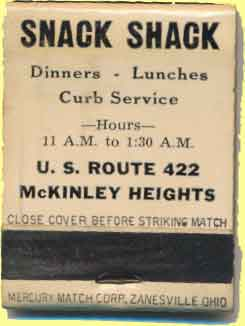

Ward-Thomas Museum


McKinley Heights Memories–Part 1.
Ward — Thomas
Museum
Home of the Niles Historical Society
503 Brown Street Niles, Ohio 44446
Click here to become a Niles Historical Society Member or to renew your membership
Click on any photograph to view a larger image.
News
Tours
Individual Membership: $20.00
Family Membership: $30.00
Patron Membership: $50.00
Business Membership: $100.00
Lifetime Membership: $500.00
Corporate Membership:
Call 330.544.2143
Do you love the history of Niles, Ohio and want to preserve that history and memories of events for future generations?
As a 501(c)3 non-profit organization, your donation is tax deductible. When you click on the Donate Button, you will be taken to a secure Website where your donation will entered and a receipt generated.
|
Harrison School on Route 422. M.E. Riley bought the Harrison School in 1965 and turned it into a Technical School, teaching Drafting, Air Conditioning, Refrigeration, and Electronics. It has been expanded to eight classrooms and laboratories, and two other buildings have been added to the educational complex. |
There are three parts to the McKinley Heights Memories story. McKinley Heights Memories Part 1. McKinley Heights Memories–Part 2. McKinley Heights Memories–Part 3. McKinley Heights Memories–Part 4. McKinley Heights Memories–Part 5. 1984 Times Special
Edition–By Mary Jane Steffey A one-room school, about one half mile north on Route 422, accomodated the children of the residents. This school taught grades one through eight. Some of the older boys were called on the attend to the janitor work, such as shoveling snow, etc. Children were expected to get to school by their own transportation. School buses were non-existent. The children attended this school until 1918, when a new two room brick school was built on property about one fourth mile south on the same side of the road. It was called McKinley School. Two years later it was enlarged to four rooms and was acquired by the Niles City School System. The Niles Board renamed the school Harrison School. Students used this school until 1955. Now they are bused to schools within the city limits of Niles. |
|
On the Southeast Corner was a gas station, built in 1924 by Phil Bianco. It was operated as a Cities Service Station until it became a Fleet Wing station in 1947. (The Cities Service sign is visible in the upper left-hand corner of the photo). Phil’s sons now operate the gas station, and expanded it to another building for the sale and service of boating, lawn and garden equipment, and snow vehicles. |
||
| |
||
The original Snack Shack as it appeared in 1958 before the new room was added on and before the brick front. The name has been changed to Rudy's Snack Shack.  |
Where the Snack Shack now stands was a small candy and ice cream parlor that served the young people after skating on the frozen creeks in winter, or swimming in summer, or after a hot street car ride from Youngstown or Warren. In 1943, during World War II, Mrs. Dorothy Allison and Mr. Roodhouse opened a Snack Shack, calling it “A Comfy Coffee Kitchen”. This emporium had outside plumbing. After World War II, all businesses expanded, including the Snack Shack. In 1957, Mr. Roodhouse’s son, Rudy, took over the restaurant and after enlarging and improving it (including indoor plumbing), changed the name to Rudy’s Snack Shack. In 1962 it was almost completely destroyed by fire, but was rebuilt and remodeled and its name changed again to Rudy’s Restaurant. Rudy’s health forced him to sell the popular eating place to the Accordinos in 1974. Sam Accordino named the restaurant The Snack Shack. In 1981 Paul Stabile purchased the restaurant from the Accordinos, renamed it Paul's Restaurant and served customers for 17 years. On November 1, 1998 the present day owners, Louis and Kathy Scenna (2023), purchased the building and renamed it Scenna's Family Restaurant. An outdoor patio was added as an addition to the original building in 2015. The food has always been excellent, which is probably the reason the restaurant has had many years of success. |
|
| |
||
Another view of Phil Bianco's station. |
Bob Diley's Gas Station was also located at the corner of 422 and Robbins Avenue. |
|
|
|
||
{kind=link}
{kind=link}
{kind=link}
{kind=link}
{kind=link}
{kind=link}
{kind=link}